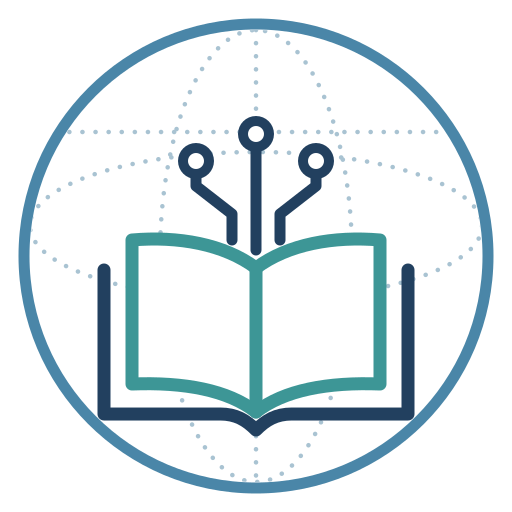

Why this project
Good teaching expertise should not depend on where you teach. AI skills let one educator's know-how become a tool that any colleague, anywhere, can use for free, adapt and improve.
Teaching expertise for everyone
Every program writes learning objectives, builds sessions, prepares readings, writes and grades exams, and runs mentoring and administration. The expertise behind doing these well is concentrated in a few people and a few well-resourced institutions, and it rarely leaves them. Smaller programs, and programs in many countries, build everything on their own.
AI assistants could spread that expertise, but most educators use them through one-off prompts: written from scratch each time, with quality that depends on the day, and lost when the chat ends. A shared skill changes that. It is free, uses an open format, needs no programming, and works in any major AI assistant, including free plans through a paste-in version.
"Without borders" means three things: between institutions, between countries, and between AI platforms. And knowledge flows in every direction: any educator can adapt a skill, report what happened, or contribute their own.
How it started
The concept for the project came out of a shared conversation at AAMC 2026. Educators from different institutions and countries compared how they teach, and found that each was solving the same problems on their own: objectives, sessions, readings, exams, mentoring. What one institution had already built could have saved the others months of work, and nobody had a simple way to pass it on.
That conversation is why sharing sits at the centre of the project. Teaching knowledge grows when it moves: each educator who uses a skill, adapts it to their setting and reports back makes it better for the next one. Kept inside one institution, the same knowledge stays as good as it was on the day it was written.
The idea: write once, share, improve together
An AI skill packages instructions, reference material and a step-by-step workflow into one reusable tool. It can be shared and adapted across AI platforms, institutions and users.
- Write it onceAn educator who knows a task well writes the skill: what it is for, what it needs, the steps, what it should produce, and its limits.
- Share itColleagues at other institutions use it in their own AI tool: Claude, ChatGPT, Gemini or Copilot, with a paste-in version for free plans.
- Improve it togetherEach use, report, adaptation and review makes the skill better and shows how far it can be trusted.
Who it is for
Leaders of graduate, MD-PhD and postdoctoral training, faculty educators, course leaders and program administrators. Medical-school educators are a large part of the community, and the library also serves biomedical research education beyond medicine. No programming experience is needed.
A global community of practice
A shared library becomes a community when people agree on how skills are written, checked and shared. These are the standards we are building together.
- Documentation. Every skill states its purpose, inputs, steps, expected outputs and limitations, and what its rules rest on. See the pedagogy.
- Quality assurance. Maturity levels from draft to reviewed, usage reports, and peer review by educators at other institutions. See how skills are tested.
- Portability. Each skill records which AI tools it has been tested in and what had to change, so another educator knows what to expect.
- Open access. Free to use, open licences, plain language, no programming, and paste-in versions so access does not depend on one paid tool.
- Collaborative sharing. Open licences, institutional variants, and one-maintainer approval so contributions move quickly. See how to contribute.
What educators use skills for
Five areas of work, each with the skills that serve it today. Where an area is still thin, the next skills will come from the community.
Grading and assessment
Exam Question Writer writes and checks exam items. Grading support is still open.
Curriculum and lesson development
Learning Objectives Designer, Syllabus Builder, Curriculum Map Builder and PBL / RBL Session Builder.
Reading materials and assignments
Reading Material Generator turns papers and chapters into structured readings with self-checks.
Formatting and adapting existing resources
Lesson Format Checker checks lessons and notebooks against your institution's format.
Mentoring and program administration
Committee Meeting Planner helps a graduate student plan, run and write up their thesis committee meeting. Share more.
Hands-on workshops
Skills spread best when educators work with them together. Two ready-to-run workshops, with lesson plans, timings, slides and handouts, let anyone lead a session at their own institution: one for educators using skills for the first time, and one for writing new skills and sharing them in the library.
See the workshopsWhat the logo means

The logo we designed represents shared knowledge in a global community: teaching expertise that is open to all, and AI skills that carry it from one educator to many, across institutions and countries.
Founders and contact
Questions, ideas for a skill, a workshop at your institution, or a concern about something in the library: write to either of us. For a problem with a specific skill, you can also report it on GitHub.
Amit Shraga, PhD
Head of Data Science Tools and Chair of the AI & Digital Tools Committee, The Miriam and Aaron Gutwirth Medical School, Weizmann Institute of Science
Leads the integration of artificial intelligence, bioinformatics and digital learning tools into physician-scientist training in the MD-PhD program. He develops AI-enhanced learning environments built on real biomedical datasets, and wrote AI policies for the MD-PhD program and the Weizmann Institute. He also chairs the board of the Israeli Astronomical Association.
Talia H. Swartz, MD, PhD
Senior Associate Dean for MD-PhD Education and Professor of Medicine (Infectious Diseases), Medical Education and Graduate Education, Icahn School of Medicine at Mount Sinai
A physician-scientist who cares for people with HIV. Her NIH-funded laboratory studies inflammatory signalling in chronic HIV infection and severe COVID-19, with the aim of new treatments. As Director of the MD-PhD Program she leads recruitment, curriculum development, outreach and student support, working to make physician-scientist careers more visible and accessible.
Disclaimer
This is a community library. Each skill is written and maintained by the educators who contribute it, and they are responsible for its content. The founders, the maintainers and their institutions do not review every skill in advance, and do not endorse or take responsibility for skills that others contribute, or for any output that an AI tool produces with them.
- Skills are provided as they are, without warranty of any kind, under the licence stated on each skill. A Draft skill has not been tested beyond its author; the maturity level shows how much evidence stands behind each skill.
- You remain responsible for how you use AI. Review every output before you use it, follow your institution's AI and data policies, and never enter patient data or identifiable learner data.
- Nothing in the library is medical, legal, regulatory or financial advice. Check dates, rules and requirements against the official sources and your institution.
- Contributors confirm that they have the right to share what they submit. Views in a skill are its contributors' own and not those of their institutions.
- If something is wrong, unsafe or should not be here, report a problem and a maintainer will correct or remove it.
Want to build this with us? Join the community.